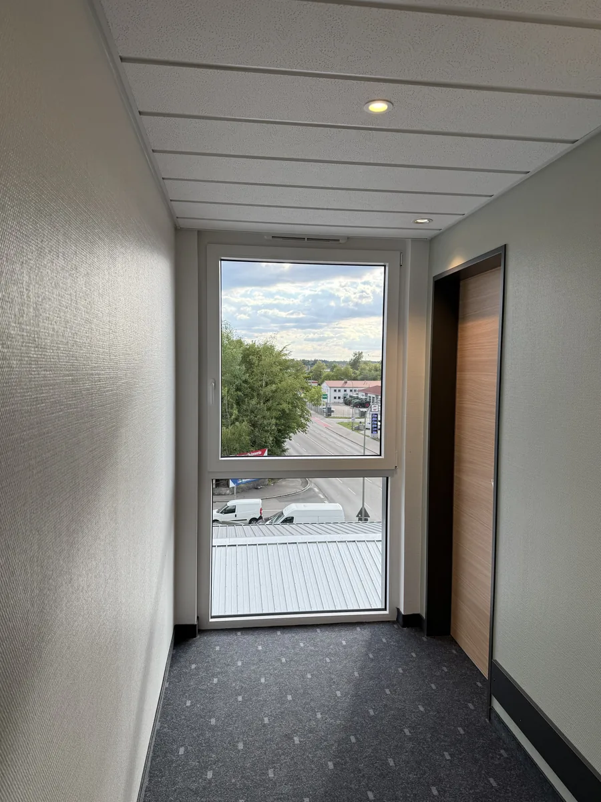
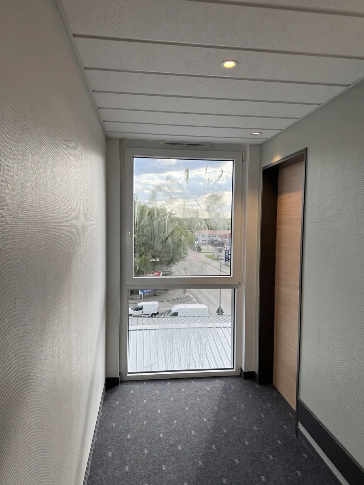
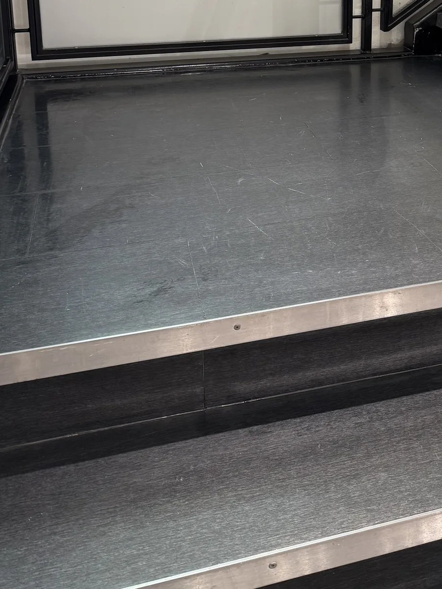
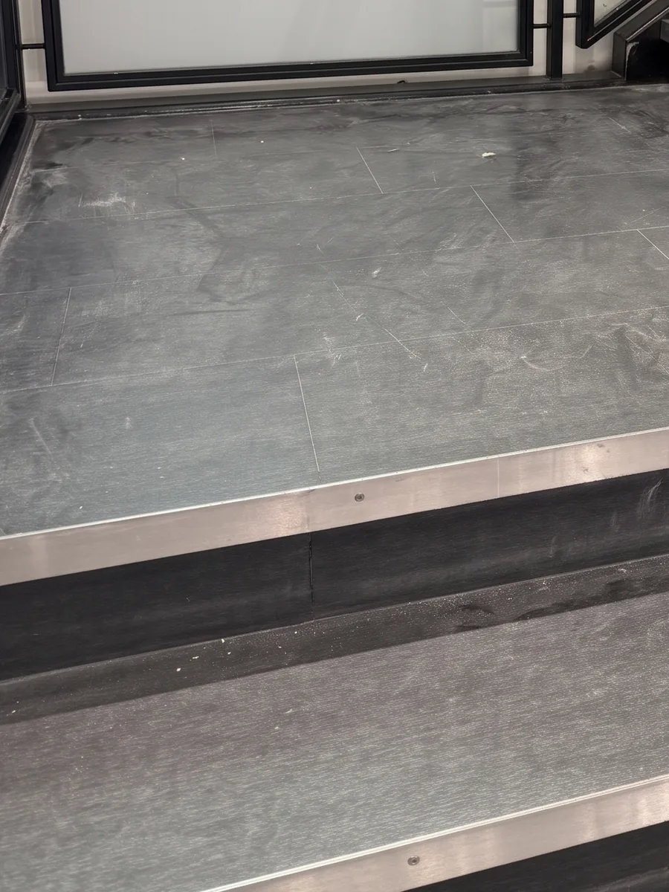

Beqiri Clean ist Ihr lokaler Partner für professionelle Gebäudereinigung in Memmingen, Kempten und Mindelheim. Vom Büro über die Praxis bis zur Gewerbehalle – wir beraten Sie individuell und erstellen Ihnen ein kostenloses, unverbindliches Angebot.
Schreibtische, Ablagen, Kanten – wir reinigen gründlich, nicht nur das Offensichtliche.
Glasflächen innen und außen – sauber abgezogen, ohne Schlieren.
Sie kommen ins Büro – und alles ist bereit. In Memmingen, Kempten und Mindelheim.
Jetzt Angebot anfordernVon der täglichen Unterhaltsreinigung bis zur einmaligen Grundreinigung – wir bieten Ihnen alle Reinigungsleistungen aus einer Hand. Zuverlässig, gründlich und zu fairen Preisen in Memmingen, Kempten und Mindelheim.

Ein sauberes Büro ist der erste Schritt zu mehr Produktivität. Wir kümmern uns um alles – von der täglichen Reinigung bis zur gründlichen Sonderreinigung für Unternehmen in Memmingen und Umgebung.
Mehr erfahren →
Saubere Fenster für einen klaren Blick – streifenfrei und professionell. Unsere Fensterreinigung in Memmingen sorgt für den perfekten ersten Eindruck bei Ihren Kunden und Gästen.
Mehr erfahren →
Verleihen Sie Ihren Räumlichkeiten neuen Glanz. Unsere Grundreinigung in Memmingen entfernt hartnäckige Verschmutzungen und sorgt für eine frische, hygienische Umgebung.
Mehr erfahren →
Dauerhaft saubere Räumlichkeiten ohne Aufwand – unsere regelmäßige Unterhaltsreinigung in Memmingen hält Ihr Büro, Ihre Praxis oder Ihre Gewerbefläche konstant gepflegt. Täglich, wöchentlich oder nach Bedarf.
Mehr erfahren →
Treppen, Eingänge, Geländer und Kellerflure im festen Turnus – für Hausverwaltungen, Eigentümergemeinschaften und Vermieter. Mit verlässlichen Terminen, damit niemand nachfragen muss.
Mehr erfahren →
Nach Neubau, Umbau oder Renovierung entfernen wir Staub, Farb- und Mörtelreste – von der Grobreinigung bis zur bezugsfertigen Feinreinigung vor der Übergabe.
Mehr erfahren →
Bürostühle, Sofas im Empfang und Sitzgruppen in Memminger Praxen und Büros – tiefenrein gereinigt, Flecken und Gerüche entfernt, die Bezüge geschont.
Mehr erfahren →
Teppichböden sammeln Staub und Allergene. Wir reinigen sie maschinell in der Tiefe und so, dass Sie die Räume schnell wieder nutzen können.
Mehr erfahren →Ziehen Sie den Regler zur Seite und sehen Sie selbst. Die Bilder stammen aus echten Aufträgen. Damit der Vergleich deckungsgleich ist, haben wir das Vorher-Bild digital an den Blickwinkel des Nachher-Fotos angeglichen.


Vorher Nachher

Vorher Nachher„Ich habe Beqiri Clean für eine Bauendreinigung beauftragt und war mit der Leistung sehr zufrieden. Das Team hat sauber gearbeitet, war pünktlich und ist auf unsere Wünsche eingegangen. Klare Empfehlung!"
„Bei unserer alten Reinigung war es immer schwierig, jemanden zu erreichen oder Dinge abzusprechen. Bei Beqiri Clean ist das komplett anders. Man bekommt schnell eine Antwort und alles läuft unkompliziert. Dazu noch saubere Arbeit, sind echt zufrieden."
In nur drei einfachen Schritten zu Ihrer professionellen Gebäudereinigung in Memmingen – unkompliziert, schnell und ohne Risiko.
Füllen Sie unser kurzes Quiz-Formular aus. In weniger als 2 Minuten erhalten wir alle Informationen für Ihr maßgeschneidertes Angebot.
Wir melden uns innerhalb von 24 Stunden. Bei Bedarf kommen wir kostenlos vor Ort in Memmingen und analysieren gemeinsam Ihren Bedarf.
Sie erhalten ein transparentes, faires Angebot ohne versteckte Kosten. Kein Druck, keine Verpflichtung – Sie entscheiden in Ruhe.
Beantworten Sie uns ein paar kurze Fragen – wir erstellen Ihnen daraufhin ein maßgeschneidertes Angebot für Ihre Gebäudereinigung in Memmingen.
Sie sind mit Ihrer aktuellen Gebäudereinigung in Memmingen unzufrieden, da diese Ihre Ansprüche nicht vollständig erfüllt. Es fängt mit unqualifiziertem Personal an und geht aufgrund der mangelnden Qualität bis zu ständigen Reklamationen. Und wenn dann sogar die Absprache mit dem Ansprechpartner nicht richtig funktioniert, entscheidet man sich oft lieber zu wechseln.
Termine werden nicht eingehalten, Reinigungen fallen aus oder werden halbherzig erledigt – ohne Vorwarnung und ohne Entschuldigung.
Oberflächen sind nicht wirklich sauber, Details werden ignoriert und das Ergebnis entspricht nie dem, was versprochen wurde.
Anliegen werden ignoriert, Rückrufe kommen nie und bei Problemen fühlt man sich allein gelassen. Kein persönlicher Ansprechpartner.
Mitarbeiter ohne Erfahrung, falsche Reinigungsmittel für empfindliche Oberflächen und kein Gespür für die Anforderungen des Kunden.
Bei Beqiri Clean haben wir aus den Schwächen anderer Reinigungsfirmen in Memmingen gelernt. Unser Ansatz basiert auf drei einfachen, aber entscheidenden Prinzipien.
Der wichtigste Grund, damit eine Gebäudereinigung in Memmingen Ihre Bedürfnisse wirklich gut decken kann, ist einfach aber essenziell: Wir begrenzen uns auf Kunden wie Sie und können so Systeme aufbauen, die in Ihrem Objekt die Qualität dauerhaft sicherstellen. Keine Abstriche, kein Kompromiss.
Auch wenn wir uns durch unsere Spezialisierung generell hervorragend mit Kunden wie Ihnen auskennen, haben Sie natürlich eine vollkommen individuelle Situation. Deshalb erstellen wir nach einem Analysetermin einen maßgeschneiderten Reinigungsplan, der effizient ist und alles beinhaltet, was Ihnen besonders wichtig ist.
Damit die Anwendung des Reinigungsplans erfolgreich gelingt, setzen wir ausschließlich Fachkräfte ein, die sich in der Gebäudereinigung in Memmingen hervorragend auskennen. Personal, das den Plan Schritt für Schritt umsetzt, ein Auge fürs Detail hat und auf Ihre Wünsche eingeht.
Mit uns als Ihrem Partner für Gebäudereinigung in Memmingen gewinnen Sie mehr als nur saubere Räume – Sie gewinnen Zeit, Ruhe und Verlässlichkeit.
Sparen Sie sich jegliche Organisation rund um die Reinigung. Vergessen Sie Tage, an denen Sie sich um Reklamationen kümmern mussten. Wir erledigen das – zuverlässig.
Nutzen Sie die gewonnene Zeit für rentable Tätigkeiten. Gewinnen Sie wichtige Kunden durch einzigartige Sauberkeit und Hygiene in Ihren Räumlichkeiten in Memmingen.
Erzählen Sie uns, was Ihre wichtigsten Wünsche sind – und lassen Sie uns von da an den Rest machen. Verschwenden Sie keine Gedanken mehr daran.
Ein zuverlässiger Reinigungspartner in Memmingen bedeutet jemanden, dem Sie vertrauen können. Jemand, der auf Details achtet und ein tolles Ergebnis entstehen lässt.
Sollten Sie besondere Anliegen oder Wünsche haben, erreichen Sie jederzeit Ihren persönlichen Ansprechpartner – kein Callcenter, sondern direkter Kontakt.
Als lokaler Reinigungsservice in Memmingen kennen wir die Region. Kurze Anfahrtswege bedeuten für Sie schnelle Reaktionszeiten und flexible Termine.
Ob Büro in der Memminger Altstadt, Arztpraxis in Amendingen oder Gewerbehalle im Industriegebiet Nord – Beqiri Clean hält Ihre Räume in ganz Memmingen sauber. Von Holzgünz aus sind wir in wenigen Minuten bei Ihnen: ideal für kurzfristige Termine und für die regelmäßige Unterhaltsreinigung. Wir reinigen Büros, Praxen, Kanzleien, Ladenlokale und Gewerbeobjekte – von der Kanzlei am Marktplatz bis zur Praxis in Steinheim.
Wir sind Ihr lokaler Partner für professionelle Gebäudereinigung im Allgäu – schnell, zuverlässig und in Ihrer Nähe.
Checklisten, Vorlagen und ehrliche Antworten aus dem Alltag einer Reinigungsfirma im Allgäu.
Laufende Pflege oder einmalige Tiefenreinigung? Wann Sie welche Reinigung brauchen und wie beides zusammenspielt.
Weiterlesen →Versicherung, Angebot, Vertrag: Diese 10 Punkte sollten Sie prüfen, bevor Sie eine Reinigungsfirma beauftragen.
Weiterlesen →
Was gehört in einen Reinigungsplan und wie oft wird was gereinigt? Mit kostenloser Vorlage zum Ausdrucken.
Weiterlesen →Gebäudereinigung ist der Oberbegriff für alle Reinigungsarbeiten in und an Gebäuden. Für Unternehmen in Memmingen sind vor allem drei Bereiche wichtig: die Unterhaltsreinigung, die Räume regelmäßig sauber hält, die Grundreinigung für hartnäckigen Schmutz und den sauberen Neustart, und die Glas- und Fensterreinigung. Dazu kommen Sonderleistungen wie Baureinigung, Teppich- und Polsterreinigung.
Eigentlich für jeden Betrieb, in dem Reinigung bisher nebenbei erledigt wird. Ein Büro in der Memminger Altstadt, eine Praxis in Amendingen, ein Produktionsbetrieb im Industriegebiet Nord oder eine Wohnanlage mit Treppenhaus: Überall kostet Reinigung Zeit, die Ihnen und Ihrem Team für die eigentliche Arbeit fehlt. Eine professionelle Firma arbeitet nach einem festen Plan, zu festen Zeiten und mit den passenden Mitteln. Welche Anforderungen in Ihrer Branche gelten, finden Sie auf unseren Branchenseiten.
Das hängt von der Nutzung ab. Sanitärräume und Teeküchen sollten in Büros täglich gereinigt werden, Böden und Arbeitsplätze zwei- bis dreimal pro Woche. Praxen, Kitas und Fitnessstudios brauchen kürzere Intervalle, weil dort mehr Menschen auf engem Raum zusammenkommen. Treppenhäuser in Mehrfamilienhäusern werden meist wöchentlich gereinigt. Eine Grundreinigung ist ein- bis zweimal im Jahr sinnvoll, im Allgäu oft im Frühjahr, wenn Streusalz und Winterschmutz entfernt werden müssen. Eine Vorlage für Ihren eigenen Plan finden Sie in unserem Ratgeber zum Reinigungsplan.
Der Preis richtet sich nach der Fläche, der Art der Räume, dem gewünschten Rhythmus und den Zeiten. Sanitärräume brauchen pro Quadratmeter mehr Zeit als ein Flur, eine tägliche Reinigung ist pro Einsatz günstiger als eine monatliche. Deshalb kommen wir vor dem Angebot kostenlos vorbei. Danach bekommen Sie ein schriftliches Angebot mit Festpreis, das Angebot selbst ist für Sie kostenlos.
An Klarheit: ein schriftliches Angebot nach Besichtigung, ein Reinigungsplan, feste Mitarbeiter, ein erreichbarer Ansprechpartner und eine Betriebshaftpflichtversicherung. Worauf Sie noch achten sollten, haben wir in unserer Checkliste mit 10 Punkten zusammengefasst.
Beqiri Clean sitzt in Holzgünz, wenige Minuten von Memmingen entfernt. Wir reinigen im gesamten Stadtgebiet von Memmingen, im Umland von Buxheim bis Bad Grönenbach sowie in Kempten und Mindelheim mit rund zehn Kilometern Umkreis. Alle Orte finden Sie auf der Seite Einsatzgebiete.
Ob kurze Nachricht, Anruf oder ausführliche Anfrage – wir antworten in der Regel innerhalb von 24 Stunden.